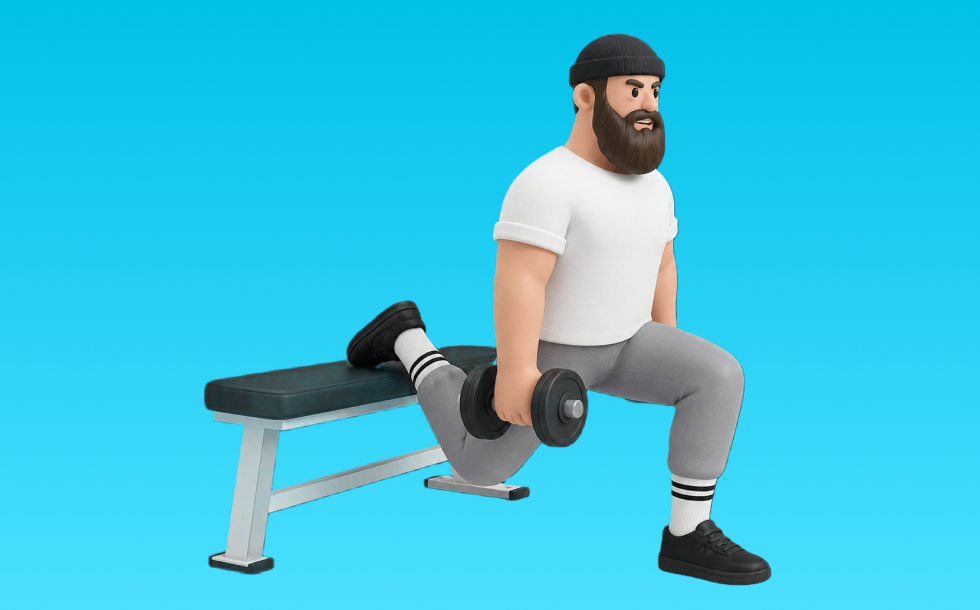

ダンベルブルガリアンスクワット

ダンベルブルガリアンスクワットとは、ダンベルを使って「片脚でしゃがんで立つ」動作でお尻（臀筋）、脚（大腿四頭筋）を鍛える種目です。後ろ足を台に乗せ、上体を保ってしゃがみ、前脚で床を押して立ち上がる動作を繰り返します。下半身の筋力・筋量アップが期待できます。
- 対象部位
- 脚
- 器具
- ダンベル
- 記録形式
- 重量・回数
- 別名
- ダンベルBSS / DBブルガリアンスクワット
YouTube動画
-
ブルガリアンスクワットの効果的なやり方
-
【超重要】ブルガリアンスクワットの正しい足の位置の決め方
-
【大臀筋・ハムの筋肥大に必須!!】ブルガリアンスクワットの適切なフォームと危険なやり方
-
両足スクワットより効く？ブルガリアンスクワットの破壊力とは
-
痩せやすい体へ、負荷の高い片足自重トレーニング！ブルガリアンスクワットの正しいやり方
-
【ブルガリアンスクワット】自宅でもできる！前ももが張らないブルガリアンスクワット解説
-
【ダンベルで行う】脚を鍛えたい人がやるべき種目3選を解説します
-
ダンベルを使った「ブルガリアンスクワット」！下半身をハードに鍛えて痩せやすい体に
-
【ブルガリアンスクワット】初心者でも正しくお尻を鍛えられる方法
-
2分で分かるダンベルブルガリアンスクワット【筋トレ初心者向け】
-
【神尻と神脚】尻とハムストリングに効かせるフォームを教えます 【新・バズーカ岡田チャンネル】 #バズーカ岡田
-
おしりのトレーニング｜ブルガリアンスクワット3種目【4分間】
-
どっちがお尻に効く？ブルガリアンスクワットの上半身は前傾か？垂直か？
-
ブルガリアンスクワットの新常識！最大ストレッチで大臀筋がバチバチ！【最強の尻トレ③/新・バズーカ岡田チャンネル】 #バズーカ岡田
-
【脚トレの常識】ブルガリアンスクワットをやらないのはもったいない！【筋トレ】
-
筋トレ初心者は絶対にブルガリアンスクワットをやるべき３つの理由
-
【ブルガリアンスクワット】part１足を乗っける台の高さを勘違いしてる件 @healthunionoda506
-
ブルガリアンスクワットが上手くなる7つのポイント お尻・大殿筋に効かせるコツ グラグラを直す！ランジ
-
ブルガリアンスクワットの正しいやり方。痩せやすい体へ、負荷の高い片足自重トレーニング！【左右 各10回×3セット】
-
【もう脚トレで迷わない】世界一丁寧なダンベル脚トレ。初心者でも絶対効く4つの種目。
-
ブルガリアンスクワットのフォーム｜お尻に効かせるやり方【研究で解説】下半身筋トレを見直す
YouTubeショート
-
【ブルガリアンスクワット】怪我なくお尻を鍛える正しいフォーム解説
-
【SGIR】ブルガリアンスクワットはやるべき！
-
やめた方がいいブルガリアンスクワット #筋トレ
-
【見てすぐ出来る】ブルガリアンスクワットの正しいフォーム解説 #shorts
-
【ブルガリアンスクワット】フォームのミスあるある。狙いたい部位を意識して、正しいフォームでやってみましょう！💪#GronG #グロング #筋トレ #フィットネス #脚トレ #ブルガリアンスクワット
-
【お尻】【ブルガリアンスクワット】お尻に効かない3つの間違い #パーソナルトレーナー #筋トレ #尻トレ #下半身痩せ
-
【ダンベル】脚トレ３選
-
今すぐ辞めて⚠️脚が太くなるブルガリアンスクワット
-
ブルガリアンスクワットの正しい脚の位置
-
脚をとにかく強くしたい人必見！高重量ブルガリアンスクワット！
-
ブルガリアンスクワットの足の位置の決め方 #shorts
-
ブルガリアンスクワットでお尻を鍛えるコツ #shorts
-
脚の日に欠かせないブルガリアンスクワットのポイント🫶🏽
-
＼ブルガリアンスクワット🍑フォーム解説／
-
ブルガリアンスクワットほんまにキツすぎるけど頑張っています #筋トレ #脚トレ #ブルガリアンスクワット #shorts
-
ブルガリアンスクワット
-
疲れない体を作るにはブルガリアンスクワットをこのやり方でやって！ チャンネル登録をお願いします! #筋トレ #トレーニング #50代
-
ブルガリアンスクワット #筋トレーニング #ダンベル #ブルガリアンスクワット #筋肉男子 #mobifitness #エクササイズ #フィットネス #運動器具 #筋トレグッズ
-
この筋肉だけは守れ！ブルガリアンスクワットが30歳以降を救う！
-
スクワット初心者に多い腰を痛めるしゃがみ方と改善方法
-
ブルガリアンスクワット日本でして通報される様子 #shorts
動作方法
- 足幅を決め、体幹を固める
- 股関節と膝を同時に曲げて下ろす
- 足裏全体で床を押して立ち上がる
動作ポイント
- 膝とつま先の向きをそろえる
- 胸を落としすぎない
- かかとを浮かせない
ワンポイントアドバイス
- ウォームアップで股関節と足首を動かす
- 高重量の日はセーフティ設定を確認する
目的別回数設定
目的や体力に応じた一般的な目安です。無理のない範囲で調整してください。
- 筋力アップ
- 1〜5回
- 筋肥大
- 6〜12回
- 持久力アップ
- 13〜20回
YouTube動画について
動画はYouTubeの公開情報をもとに表示しています。内容は投稿者によるもので、Biggrによる監修ではありません。
アプリを入手
筋トレやトレーニングの記録はBiggrにお任せください。今すぐ無料で使い始められます。